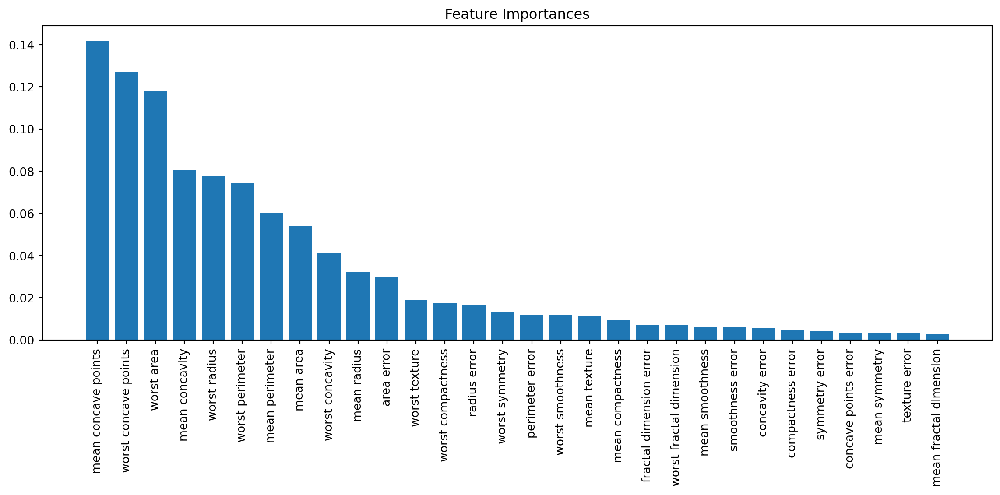

# We import our necessary libraries/modules
import numpy as np
import pandas as pd
import matplotlib.pyplot as plt
from sklearn.datasets import load_breast_cancer
from sklearn.model_selection import train_test_split
from sklearn.ensemble import RandomForestClassifierRandom Forest Classification
Classification is state-of-the-art supervised machine learning algorithm that is often used to categorize/classify data into distinct classes based on their attributes. These algorithms require labeled data for training purposes. This subset of machine learning is often used in healthcare, and we will take a dive into how this concept can be applied in breast cancer research/modeling. There are various classification algorithms that can be used depending on the problem at hand, however the one we will take a closer look at for now is Random Forest classification. Random Forest classification makes predictions about categories or classes for data points using a collection of decision trees. These trees collaborate to develop increasingly reliable results using the data features. The code below explores how Random Forest uses breast cancer data to classify a patient tumor as benign or malignant.
We are using Python’s built-in breast cancer dataset for this study.
# Load in sci-kit learn's breast cancer dataset
data = load_breast_cancer()
data{'data': array([[1.799e+01, 1.038e+01, 1.228e+02, ..., 2.654e-01, 4.601e-01,
1.189e-01],
[2.057e+01, 1.777e+01, 1.329e+02, ..., 1.860e-01, 2.750e-01,
8.902e-02],
[1.969e+01, 2.125e+01, 1.300e+02, ..., 2.430e-01, 3.613e-01,
8.758e-02],
...,
[1.660e+01, 2.808e+01, 1.083e+02, ..., 1.418e-01, 2.218e-01,
7.820e-02],
[2.060e+01, 2.933e+01, 1.401e+02, ..., 2.650e-01, 4.087e-01,
1.240e-01],
[7.760e+00, 2.454e+01, 4.792e+01, ..., 0.000e+00, 2.871e-01,
7.039e-02]]),
'target': array([0, 0, 0, 0, 0, 0, 0, 0, 0, 0, 0, 0, 0, 0, 0, 0, 0, 0, 0, 1, 1, 1,
0, 0, 0, 0, 0, 0, 0, 0, 0, 0, 0, 0, 0, 0, 0, 1, 0, 0, 0, 0, 0, 0,
0, 0, 1, 0, 1, 1, 1, 1, 1, 0, 0, 1, 0, 0, 1, 1, 1, 1, 0, 1, 0, 0,
1, 1, 1, 1, 0, 1, 0, 0, 1, 0, 1, 0, 0, 1, 1, 1, 0, 0, 1, 0, 0, 0,
1, 1, 1, 0, 1, 1, 0, 0, 1, 1, 1, 0, 0, 1, 1, 1, 1, 0, 1, 1, 0, 1,
1, 1, 1, 1, 1, 1, 1, 0, 0, 0, 1, 0, 0, 1, 1, 1, 0, 0, 1, 0, 1, 0,
0, 1, 0, 0, 1, 1, 0, 1, 1, 0, 1, 1, 1, 1, 0, 1, 1, 1, 1, 1, 1, 1,
1, 1, 0, 1, 1, 1, 1, 0, 0, 1, 0, 1, 1, 0, 0, 1, 1, 0, 0, 1, 1, 1,
1, 0, 1, 1, 0, 0, 0, 1, 0, 1, 0, 1, 1, 1, 0, 1, 1, 0, 0, 1, 0, 0,
0, 0, 1, 0, 0, 0, 1, 0, 1, 0, 1, 1, 0, 1, 0, 0, 0, 0, 1, 1, 0, 0,
1, 1, 1, 0, 1, 1, 1, 1, 1, 0, 0, 1, 1, 0, 1, 1, 0, 0, 1, 0, 1, 1,
1, 1, 0, 1, 1, 1, 1, 1, 0, 1, 0, 0, 0, 0, 0, 0, 0, 0, 0, 0, 0, 0,
0, 0, 1, 1, 1, 1, 1, 1, 0, 1, 0, 1, 1, 0, 1, 1, 0, 1, 0, 0, 1, 1,
1, 1, 1, 1, 1, 1, 1, 1, 1, 1, 1, 0, 1, 1, 0, 1, 0, 1, 1, 1, 1, 1,
1, 1, 1, 1, 1, 1, 1, 1, 1, 0, 1, 1, 1, 0, 1, 0, 1, 1, 1, 1, 0, 0,
0, 1, 1, 1, 1, 0, 1, 0, 1, 0, 1, 1, 1, 0, 1, 1, 1, 1, 1, 1, 1, 0,
0, 0, 1, 1, 1, 1, 1, 1, 1, 1, 1, 1, 1, 0, 0, 1, 0, 0, 0, 1, 0, 0,
1, 1, 1, 1, 1, 0, 1, 1, 1, 1, 1, 0, 1, 1, 1, 0, 1, 1, 0, 0, 1, 1,
1, 1, 1, 1, 0, 1, 1, 1, 1, 1, 1, 1, 0, 1, 1, 1, 1, 1, 0, 1, 1, 0,
1, 1, 1, 1, 1, 1, 1, 1, 1, 1, 1, 1, 0, 1, 0, 0, 1, 0, 1, 1, 1, 1,
1, 0, 1, 1, 0, 1, 0, 1, 1, 0, 1, 0, 1, 1, 1, 1, 1, 1, 1, 1, 0, 0,
1, 1, 1, 1, 1, 1, 0, 1, 1, 1, 1, 1, 1, 1, 1, 1, 1, 0, 1, 1, 1, 1,
1, 1, 1, 0, 1, 0, 1, 1, 0, 1, 1, 1, 1, 1, 0, 0, 1, 0, 1, 0, 1, 1,
1, 1, 1, 0, 1, 1, 0, 1, 0, 1, 0, 0, 1, 1, 1, 0, 1, 1, 1, 1, 1, 1,
1, 1, 1, 1, 1, 0, 1, 0, 0, 1, 1, 1, 1, 1, 1, 1, 1, 1, 1, 1, 1, 1,
1, 1, 1, 1, 1, 1, 1, 1, 1, 1, 1, 1, 0, 0, 0, 0, 0, 0, 1]),
'frame': None,
'target_names': array(['malignant', 'benign'], dtype='<U9'),
'DESCR': '.. _breast_cancer_dataset:\n\nBreast cancer wisconsin (diagnostic) dataset\n--------------------------------------------\n\n**Data Set Characteristics:**\n\n :Number of Instances: 569\n\n :Number of Attributes: 30 numeric, predictive attributes and the class\n\n :Attribute Information:\n - radius (mean of distances from center to points on the perimeter)\n - texture (standard deviation of gray-scale values)\n - perimeter\n - area\n - smoothness (local variation in radius lengths)\n - compactness (perimeter^2 / area - 1.0)\n - concavity (severity of concave portions of the contour)\n - concave points (number of concave portions of the contour)\n - symmetry\n - fractal dimension ("coastline approximation" - 1)\n\n The mean, standard error, and "worst" or largest (mean of the three\n worst/largest values) of these features were computed for each image,\n resulting in 30 features. For instance, field 0 is Mean Radius, field\n 10 is Radius SE, field 20 is Worst Radius.\n\n - class:\n - WDBC-Malignant\n - WDBC-Benign\n\n :Summary Statistics:\n\n ===================================== ====== ======\n Min Max\n ===================================== ====== ======\n radius (mean): 6.981 28.11\n texture (mean): 9.71 39.28\n perimeter (mean): 43.79 188.5\n area (mean): 143.5 2501.0\n smoothness (mean): 0.053 0.163\n compactness (mean): 0.019 0.345\n concavity (mean): 0.0 0.427\n concave points (mean): 0.0 0.201\n symmetry (mean): 0.106 0.304\n fractal dimension (mean): 0.05 0.097\n radius (standard error): 0.112 2.873\n texture (standard error): 0.36 4.885\n perimeter (standard error): 0.757 21.98\n area (standard error): 6.802 542.2\n smoothness (standard error): 0.002 0.031\n compactness (standard error): 0.002 0.135\n concavity (standard error): 0.0 0.396\n concave points (standard error): 0.0 0.053\n symmetry (standard error): 0.008 0.079\n fractal dimension (standard error): 0.001 0.03\n radius (worst): 7.93 36.04\n texture (worst): 12.02 49.54\n perimeter (worst): 50.41 251.2\n area (worst): 185.2 4254.0\n smoothness (worst): 0.071 0.223\n compactness (worst): 0.027 1.058\n concavity (worst): 0.0 1.252\n concave points (worst): 0.0 0.291\n symmetry (worst): 0.156 0.664\n fractal dimension (worst): 0.055 0.208\n ===================================== ====== ======\n\n :Missing Attribute Values: None\n\n :Class Distribution: 212 - Malignant, 357 - Benign\n\n :Creator: Dr. William H. Wolberg, W. Nick Street, Olvi L. Mangasarian\n\n :Donor: Nick Street\n\n :Date: November, 1995\n\nThis is a copy of UCI ML Breast Cancer Wisconsin (Diagnostic) datasets.\nhttps://goo.gl/U2Uwz2\n\nFeatures are computed from a digitized image of a fine needle\naspirate (FNA) of a breast mass. They describe\ncharacteristics of the cell nuclei present in the image.\n\nSeparating plane described above was obtained using\nMultisurface Method-Tree (MSM-T) [K. P. Bennett, "Decision Tree\nConstruction Via Linear Programming." Proceedings of the 4th\nMidwest Artificial Intelligence and Cognitive Science Society,\npp. 97-101, 1992], a classification method which uses linear\nprogramming to construct a decision tree. Relevant features\nwere selected using an exhaustive search in the space of 1-4\nfeatures and 1-3 separating planes.\n\nThe actual linear program used to obtain the separating plane\nin the 3-dimensional space is that described in:\n[K. P. Bennett and O. L. Mangasarian: "Robust Linear\nProgramming Discrimination of Two Linearly Inseparable Sets",\nOptimization Methods and Software 1, 1992, 23-34].\n\nThis database is also available through the UW CS ftp server:\n\nftp ftp.cs.wisc.edu\ncd math-prog/cpo-dataset/machine-learn/WDBC/\n\n.. topic:: References\n\n - W.N. Street, W.H. Wolberg and O.L. Mangasarian. Nuclear feature extraction \n for breast tumor diagnosis. IS&T/SPIE 1993 International Symposium on \n Electronic Imaging: Science and Technology, volume 1905, pages 861-870,\n San Jose, CA, 1993.\n - O.L. Mangasarian, W.N. Street and W.H. Wolberg. Breast cancer diagnosis and \n prognosis via linear programming. Operations Research, 43(4), pages 570-577, \n July-August 1995.\n - W.H. Wolberg, W.N. Street, and O.L. Mangasarian. Machine learning techniques\n to diagnose breast cancer from fine-needle aspirates. Cancer Letters 77 (1994) \n 163-171.',
'feature_names': array(['mean radius', 'mean texture', 'mean perimeter', 'mean area',
'mean smoothness', 'mean compactness', 'mean concavity',
'mean concave points', 'mean symmetry', 'mean fractal dimension',
'radius error', 'texture error', 'perimeter error', 'area error',
'smoothness error', 'compactness error', 'concavity error',
'concave points error', 'symmetry error',
'fractal dimension error', 'worst radius', 'worst texture',
'worst perimeter', 'worst area', 'worst smoothness',
'worst compactness', 'worst concavity', 'worst concave points',
'worst symmetry', 'worst fractal dimension'], dtype='<U23'),
'filename': 'breast_cancer.csv',
'data_module': 'sklearn.datasets.data'}# Split up our X-value data
X = pd.DataFrame(data.data, columns = data.feature_names)
X| mean radius | mean texture | mean perimeter | mean area | mean smoothness | mean compactness | mean concavity | mean concave points | mean symmetry | mean fractal dimension | ... | worst radius | worst texture | worst perimeter | worst area | worst smoothness | worst compactness | worst concavity | worst concave points | worst symmetry | worst fractal dimension | |
|---|---|---|---|---|---|---|---|---|---|---|---|---|---|---|---|---|---|---|---|---|---|
| 0 | 17.99 | 10.38 | 122.80 | 1001.0 | 0.11840 | 0.27760 | 0.30010 | 0.14710 | 0.2419 | 0.07871 | ... | 25.380 | 17.33 | 184.60 | 2019.0 | 0.16220 | 0.66560 | 0.7119 | 0.2654 | 0.4601 | 0.11890 |
| 1 | 20.57 | 17.77 | 132.90 | 1326.0 | 0.08474 | 0.07864 | 0.08690 | 0.07017 | 0.1812 | 0.05667 | ... | 24.990 | 23.41 | 158.80 | 1956.0 | 0.12380 | 0.18660 | 0.2416 | 0.1860 | 0.2750 | 0.08902 |
| 2 | 19.69 | 21.25 | 130.00 | 1203.0 | 0.10960 | 0.15990 | 0.19740 | 0.12790 | 0.2069 | 0.05999 | ... | 23.570 | 25.53 | 152.50 | 1709.0 | 0.14440 | 0.42450 | 0.4504 | 0.2430 | 0.3613 | 0.08758 |
| 3 | 11.42 | 20.38 | 77.58 | 386.1 | 0.14250 | 0.28390 | 0.24140 | 0.10520 | 0.2597 | 0.09744 | ... | 14.910 | 26.50 | 98.87 | 567.7 | 0.20980 | 0.86630 | 0.6869 | 0.2575 | 0.6638 | 0.17300 |
| 4 | 20.29 | 14.34 | 135.10 | 1297.0 | 0.10030 | 0.13280 | 0.19800 | 0.10430 | 0.1809 | 0.05883 | ... | 22.540 | 16.67 | 152.20 | 1575.0 | 0.13740 | 0.20500 | 0.4000 | 0.1625 | 0.2364 | 0.07678 |
| ... | ... | ... | ... | ... | ... | ... | ... | ... | ... | ... | ... | ... | ... | ... | ... | ... | ... | ... | ... | ... | ... |
| 564 | 21.56 | 22.39 | 142.00 | 1479.0 | 0.11100 | 0.11590 | 0.24390 | 0.13890 | 0.1726 | 0.05623 | ... | 25.450 | 26.40 | 166.10 | 2027.0 | 0.14100 | 0.21130 | 0.4107 | 0.2216 | 0.2060 | 0.07115 |
| 565 | 20.13 | 28.25 | 131.20 | 1261.0 | 0.09780 | 0.10340 | 0.14400 | 0.09791 | 0.1752 | 0.05533 | ... | 23.690 | 38.25 | 155.00 | 1731.0 | 0.11660 | 0.19220 | 0.3215 | 0.1628 | 0.2572 | 0.06637 |
| 566 | 16.60 | 28.08 | 108.30 | 858.1 | 0.08455 | 0.10230 | 0.09251 | 0.05302 | 0.1590 | 0.05648 | ... | 18.980 | 34.12 | 126.70 | 1124.0 | 0.11390 | 0.30940 | 0.3403 | 0.1418 | 0.2218 | 0.07820 |
| 567 | 20.60 | 29.33 | 140.10 | 1265.0 | 0.11780 | 0.27700 | 0.35140 | 0.15200 | 0.2397 | 0.07016 | ... | 25.740 | 39.42 | 184.60 | 1821.0 | 0.16500 | 0.86810 | 0.9387 | 0.2650 | 0.4087 | 0.12400 |
| 568 | 7.76 | 24.54 | 47.92 | 181.0 | 0.05263 | 0.04362 | 0.00000 | 0.00000 | 0.1587 | 0.05884 | ... | 9.456 | 30.37 | 59.16 | 268.6 | 0.08996 | 0.06444 | 0.0000 | 0.0000 | 0.2871 | 0.07039 |
569 rows × 30 columns
# Split up our y-value data
y = pd.Series(data.target)
y0 0
1 0
2 0
3 0
4 0
..
564 0
565 0
566 0
567 0
568 1
Length: 569, dtype: int64# Split our data into training and testing data to develop our model
X_train, X_test, y_train, y_test = train_test_split(X, y, test_size=0.3, random_state=42)# Initialize the model
clf = RandomForestClassifier(n_estimators=100, random_state=42)# Fit our model usin the training data
clf.fit(X_train, y_train)RandomForestClassifier(random_state=42)# Make predictions using the X-testing data
y_pred = clf.predict(X_test)
y_predarray([1, 0, 0, 1, 1, 0, 0, 0, 0, 1, 1, 0, 1, 0, 1, 0, 1, 1, 1, 0, 1, 1,
0, 1, 1, 1, 1, 1, 1, 0, 1, 1, 1, 1, 1, 1, 0, 1, 0, 1, 1, 0, 1, 1,
1, 1, 1, 1, 1, 1, 0, 0, 1, 1, 1, 1, 1, 0, 0, 1, 1, 0, 0, 1, 1, 1,
0, 0, 1, 1, 0, 0, 1, 0, 1, 1, 1, 1, 1, 1, 0, 1, 1, 0, 0, 0, 0, 0,
1, 1, 1, 1, 1, 1, 1, 1, 0, 0, 1, 0, 0, 1, 0, 0, 1, 1, 1, 0, 1, 1,
0, 1, 1, 0, 1, 0, 1, 1, 1, 0, 1, 1, 1, 0, 1, 0, 0, 1, 1, 0, 0, 0,
1, 1, 1, 0, 1, 1, 1, 0, 1, 0, 1, 1, 0, 1, 0, 0, 0, 1, 0, 1, 1, 1,
1, 0, 0, 1, 1, 1, 1, 1, 1, 1, 1, 1, 1, 1, 1, 0, 1])After making predictions with the model, we want to verify its accuracy by comparing the predicted results with the actual test results.
# Compute the accuracy based on our calculated y-data and the y-test data
from sklearn.metrics import accuracy_score
accuracy = accuracy_score(y_test, y_pred)
print(f"Accuracy: {accuracy}")Accuracy: 0.9707602339181286We can visualize the effect of each feature to better understand the most significant features in the Random Forest study.
# Sort feature importances for visualization purposes
feature_importances = clf.feature_importances_
sorted_indices = np.argsort(feature_importances)[::-1]
sorted_features = X.columns[sorted_indices]# Plot the sorted feature importances in descending order to view the most significant features
plt.figure(figsize=(12, 6))
plt.title("Feature Importances")
plt.bar(range(X.shape[1]), feature_importances[sorted_indices], align="center")
plt.xticks(range(X.shape[1]), sorted_features, rotation=90)
plt.tight_layout()
plt.show()
We can see that from the code output above, the model appears to be fairly accurate with an accuracy score of 0.97. The model appears to correctly classify the data for about 97 percent of the samples, and misclassifying 3 percent. These results indicate that the Random Forest model performs well on the dataset by correctly predicting the majority of the sample data. Let’s take a closer look at which features in the model likely contributed to these results. In the above visual, we graphed the importance of each of the features to see which ones were the most significant in the model. It can be seen that “mean concave points” and “worst concave points” appear to be the most influential features in the model.
Support Vector Machine Classification
As it was seen that the results that were yielded from the Random Forest model were accurate, we can experiment with another classification model to see if we can achieve even more accurate results. The Support Vector Machine (SVM) algorithm is a classification algorithm in which a line or boundary is draw to separate different types of data points in a way that maximizes the gap. The code below performs the same analysis using the SVM algorithm with the goal of more accurate results.
# Import the SVM fro sci-kit learn and initialize a model
from sklearn.svm import SVC
svm_classifier = SVC(kernel='linear', random_state=42)# Fit the model using the training data
svm_classifier.fit(X_train, y_train)SVC(kernel='linear', random_state=42)# Make predictions with the newly fitted model using the X-test data
y_pred = svm_classifier.predict(X_test)
y_predarray([1, 0, 0, 1, 1, 0, 0, 0, 1, 1, 1, 0, 1, 0, 1, 0, 1, 1, 1, 0, 1, 1,
0, 1, 1, 1, 1, 1, 1, 0, 1, 1, 1, 1, 1, 1, 0, 1, 0, 1, 1, 0, 1, 1,
1, 1, 1, 1, 1, 1, 0, 0, 1, 1, 1, 1, 1, 0, 1, 1, 1, 0, 0, 1, 1, 1,
0, 0, 1, 1, 0, 0, 1, 0, 1, 1, 1, 1, 1, 1, 0, 1, 1, 0, 0, 0, 0, 0,
1, 1, 1, 1, 1, 1, 1, 1, 0, 0, 1, 0, 0, 1, 0, 0, 1, 1, 1, 0, 1, 1,
0, 1, 0, 0, 1, 0, 1, 1, 1, 0, 0, 1, 1, 0, 1, 0, 0, 1, 1, 0, 0, 0,
1, 1, 1, 0, 1, 1, 1, 0, 1, 0, 1, 1, 0, 1, 0, 0, 0, 1, 0, 1, 1, 1,
1, 0, 0, 1, 1, 1, 1, 1, 1, 1, 0, 1, 1, 1, 1, 0, 1])After making predictions with the model, we want to verify its accuracy by comparing the predicted results with the actual test results.
# Compute the accuracy based on our calculated y-data and the y-test data
accuracy = accuracy_score(y_test, y_pred)
print(f"Accuracy: {accuracy:.2f}")Accuracy: 0.96# Compute/generate the feature importances
feature_importances = np.abs(svm_classifier.coef_)[0]
feature_importancesarray([1.18459174e+00, 1.57213948e-01, 2.53328286e-01, 6.00083096e-03,
2.06672071e-01, 2.73003057e-01, 6.09220472e-01, 3.70822278e-01,
3.68946148e-01, 4.66278921e-02, 2.02377021e-01, 1.80355325e+00,
3.92315274e-01, 1.11576684e-01, 2.74209471e-02, 6.06321641e-02,
4.50149140e-04, 3.53882712e-02, 5.92002603e-02, 1.13060266e-02,
3.83819674e-01, 3.76288719e-01, 3.02801050e-03, 7.14182793e-04,
4.05825264e-01, 8.11785632e-01, 1.48890783e+00, 5.78520618e-01,
1.24749021e+00, 1.10225090e-01])# Sort the feature importances in descending order
df = pd.DataFrame({'names': data.feature_names, 'importance':feature_importances})
df_sorted = df.sort_values(by='importance', ascending=False)
df_sorted| names | importance | |
|---|---|---|
| 11 | texture error | 1.803553 |
| 26 | worst concavity | 1.488908 |
| 28 | worst symmetry | 1.247490 |
| 0 | mean radius | 1.184592 |
| 25 | worst compactness | 0.811786 |
| 6 | mean concavity | 0.609220 |
| 27 | worst concave points | 0.578521 |
| 24 | worst smoothness | 0.405825 |
| 12 | perimeter error | 0.392315 |
| 20 | worst radius | 0.383820 |
| 21 | worst texture | 0.376289 |
| 7 | mean concave points | 0.370822 |
| 8 | mean symmetry | 0.368946 |
| 5 | mean compactness | 0.273003 |
| 2 | mean perimeter | 0.253328 |
| 4 | mean smoothness | 0.206672 |
| 10 | radius error | 0.202377 |
| 1 | mean texture | 0.157214 |
| 13 | area error | 0.111577 |
| 29 | worst fractal dimension | 0.110225 |
| 15 | compactness error | 0.060632 |
| 18 | symmetry error | 0.059200 |
| 9 | mean fractal dimension | 0.046628 |
| 17 | concave points error | 0.035388 |
| 14 | smoothness error | 0.027421 |
| 19 | fractal dimension error | 0.011306 |
| 3 | mean area | 0.006001 |
| 22 | worst perimeter | 0.003028 |
| 23 | worst area | 0.000714 |
| 16 | concavity error | 0.000450 |
We can visualize the effect of each feature to better understand the most significant features in the SVM study.
# Plot the sorted feature importances in descending order to view the most significant features
plt.figure(figsize=(10, 6))
plt.bar(df_sorted.names, df_sorted.importance, color='skyblue')
plt.xlabel('Importance')
plt.ylabel('Feature')
plt.title('Feature Importances (SVM)')
plt.xticks(range(X.shape[1]), sorted_features, rotation=90)
plt.show()It can be seen that from the results above, we have an accuracy score of about 0.96. The Random Forest model appears to be a better fit for this data as it yielded a slightly higher accuracy score of 0.97. However, even though that the Random Forest model yielded higher accuracy score, the SVM model appears to still be fairly accurate as it correctly predicts 96 percent of the sample data. Additionally, it can be seen in the above visualization that the “mean concave points” and “worst concave points” are the most influential features in our SVM model, which was the same case with our Random Forest model. These features appear to be the most significant features in tumor classification in this study. Ultimately, both the Random Forest and SVM models are fairly accurate with tumor prediction, however the Random Forest model appeared to be a slightly more accurate predictor in this study.